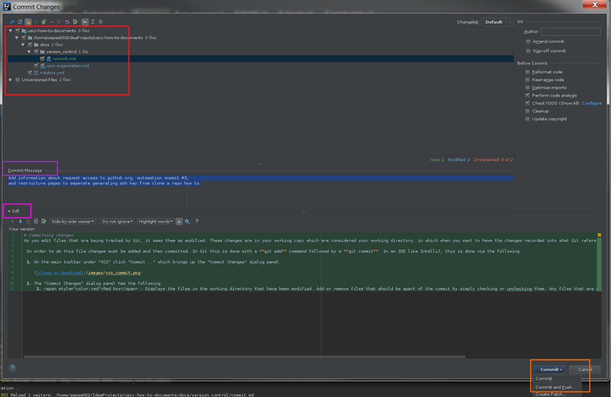

Committing changes
As you edit files that are being tracked by Git, it sees them as modified. These changes are in your working copy which are considered your working directory, in which when you want to have the changes recorded into what Git refers to as a "snapshot" you perform what is referred to as a commit.
In order to do this file changes must be added and then committed. In Git this is done with a git add command followed by a git commit. In an IDE like IntelliJ, this is done via the following.
-
On the main toolbar under "VCS" click "Commit..." which brings up the "Commit Changes" dialog panel.
-
The "Commit Changes" dialog panel has the following:
- Red - Displays the files in the working directory that have been modified. Add or remove files that should be apart of the commit by simply checking or unchecking them. Any files that are not being version tracked by git will show up under "Unversioned Files", simply add them to be tracked and commit them at the same time by checking them.
- Purple - Specify the commit message to go along with the commit. A commit message is vital to describe why the changes and/or files are being committed. This allows for changes to be recovered, backed, and provides context to the log of changes made to files.
- Pink - For a selected file in the Red box area shows the differences between that file and the last committed version of that file, if applicable.
- Orange - Here you can either commit the change which will commit the snapshot to your local read only repository and separately push the commmits. Or you can Commit and Push the changes to your remote repository at the same time which directly brings up the "Push Commits" dialog window. 
{kind=link}
{kind=link}